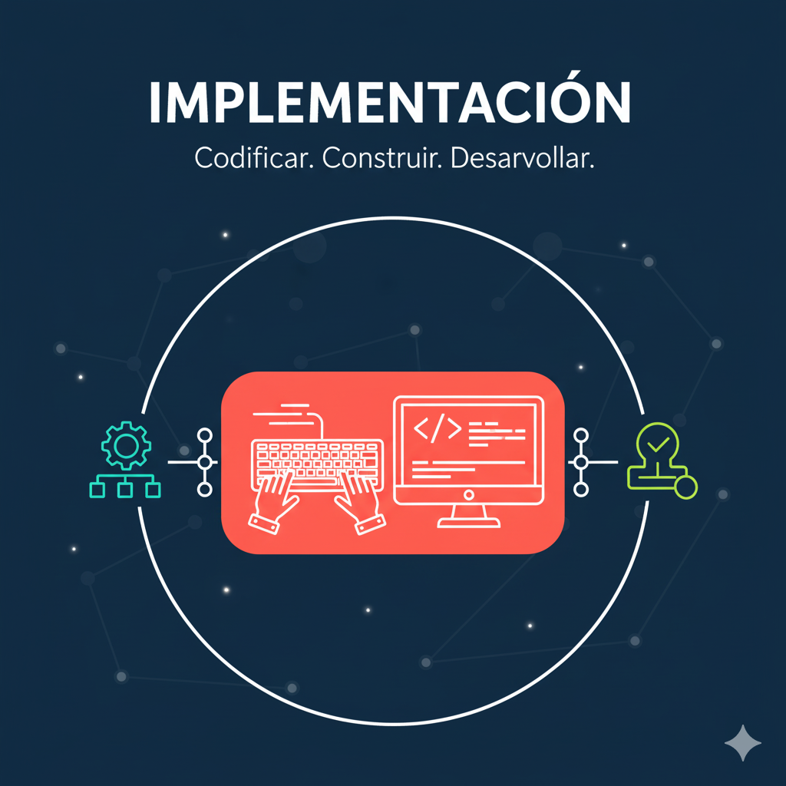

Fase 3: Implementación (Codificación)
La implementación es la etapa donde la planificación y el diseño se convierten en realidad. Se escribe el código fuente según las especificaciones de diseño establecidas. Esta fase es a menudo la más larga y visible del ciclo.
Los desarrolladores siguen estándares de codificación y utilizan lenguajes de programación adecuados. El código se organiza en módulos que se integrarán gradualmente para construir el sistema completo. La eficiencia y la claridad del código son fundamentales para facilitar las pruebas y el mantenimiento futuro.
